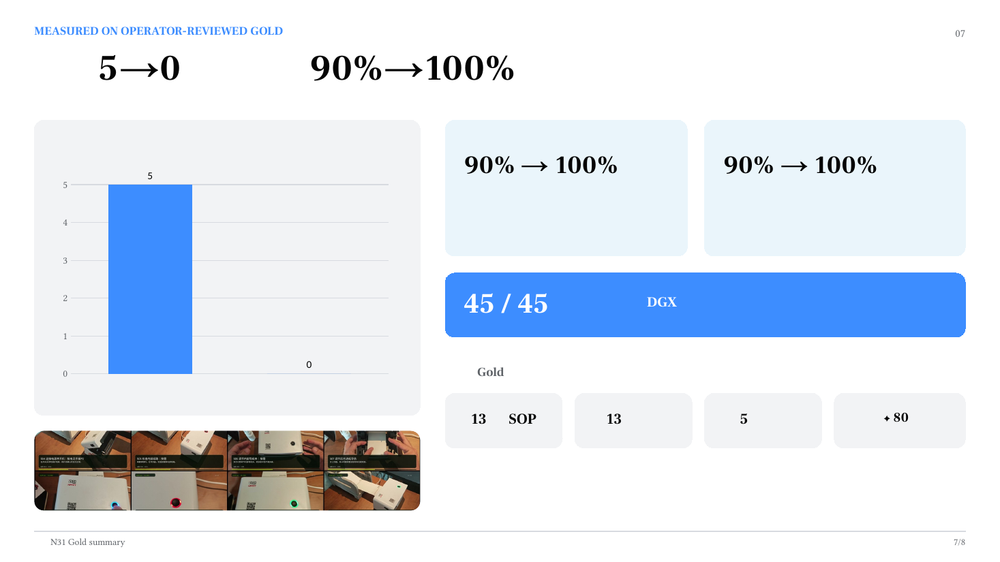
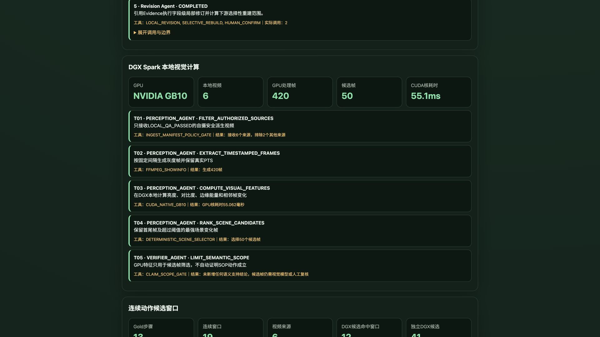
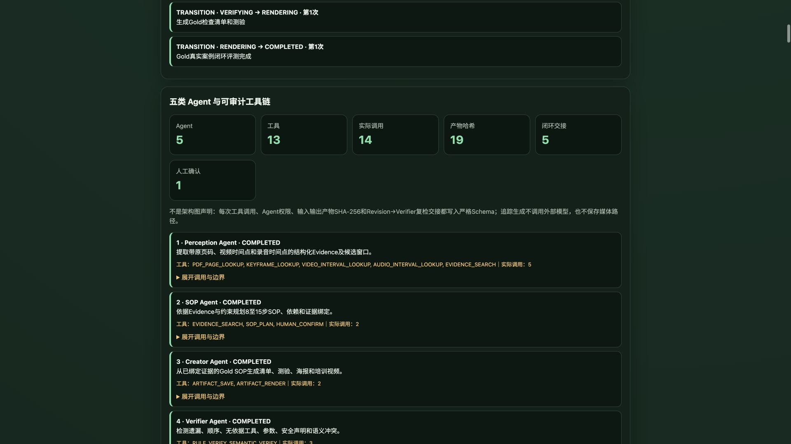

SkillForge 方法论系列 02/05 · 星星之火 · NVIDIA DGX SPARK 黑客松 2026
我们做汉印N31打印机换纸案例时，跑了一组消融实验——故意只给系统一种材料，看它能覆盖多少步骤：
第一次看到这个数据，我们愣了一下。手册不是"官方权威"吗？怎么反而覆盖率最低？
仔细想想就明白了。手册写的是"应该怎么做"——标准流程、参数范围、安全警告。但它不会写"导纸夹拧到什么手感刚好""试印时眼睛看哪条对齐线""这个批次的纸偏硬，走纸速度要调慢半档"。
师傅口述覆盖90%，比手册高，但仍然不是100%。因为师傅说的是"我平时怎么做"，他可能省略了某些"太显然不需要说"的步骤——比如"打开打印机盖"这种他觉得"这还用说？"的动作。另外，师傅说的参数是经验值，不一定跟手册的官方规格完全一致。
两样合在一起，互相补盲区，才到100%。
单一信息源永远不够。 这不是AI的问题，不是模型不够大的问题，是知识本身的分布规律。

多源消融实验：单一来源永远不够，联合覆盖才到100%工业现场的知识天然分散在三种载体里：
三者视角不同、颗粒度不同、盲区也不同。任何单一来源都有系统性盲区，而且你事先不知道盲区在哪里——只有交叉对比才能发现。
SkillForge 的 SOP 规划层有一条硬规则：每个步骤必须标注来源覆盖度。
这不是保守，是工程纪律。你想想：如果一步操作只有口述来源，没有手册佐证也没有视频印证，你怎么知道师傅说的是对的？他可能记错了，可能那台设备跟你的不一样，可能他说的参数是上一批纸的经验。
汉印N31案例中，视频、手册和口述分别产生18条、7条和8条候选，共33条。
从33条变成13步，经过四步收敛：
第一步：粗粒度拆分。 有些证据片段太长，包含了多个动作。比如一段30秒的视频里，师傅既调了导纸夹又按了走纸键——这应该拆成两条独立证据。
第二步：细粒度合并。 描述同一动作的多条证据合并。比如视频第190秒"按下走纸键"和手册第20页"按走纸键进行标签学习"说的是同一件事，合并为一条。
第三步：同义项归并。 不同来源用不同说法描述同一件事。手册写"介质学习"，师傅说"让机器认纸"，视频里显示的是"按走纸键等灯闪三下"——三个说法，一个步骤。
第四步：依赖图检查。 确保每步的前置条件在前面已经出现。不允许"先试印再装纸"这种逻辑错误——听起来像笑话，但模型真的会生成这种顺序，因为它不理解物理世界的因果关系。
最终结果：13个有序步骤，其中10步必需、3步按条件执行。12步至少两类来源印证，10步三类全覆盖。Gold SOP由实际操作者审核确认，不是模型自己给自己打分。
很多企业做培训标准化，第一反应是"把手册整理一下发给新人"。手册当然重要，但它有两个系统性盲区：

Web演示中的证据绑定：每个步骤标注来源覆盖度盲区一：现场变体。 手册写的是通用流程，但你车间那台设备可能因为批次、环境、耗材差异，需要微调。"标准是调到这个刻度，但我们这台偏紧，要回半格"——这种信息只存在于师傅的脑子里。
盲区二：隐性前提。 手册假设读者已经知道某些事情。"打开介质仓"——手册不会告诉你"打开之前先确认打印任务已经暂停，否则走纸电机还在转，你伸手进去会夹到"。师傅会随口说一句，但手册不会写这种"太显然"的警告。
反过来，只靠口述也有盲区：师傅可能记错参数、省略"太简单"的步骤、或者把个人习惯当成标准操作。手册能纠正这些偏差。
所以不是"手册好还是口述好"的问题，是"必须两个都要"的问题。
做任何知识整理——不管是写SOP、做培训、写技术文档还是做产品说明——至少找两个独立来源交叉验证。

完整Agent追踪：每次工具调用和产物哈希都可审计具体操作：
这不是多此一举，是避免"看起来对但实际有坑"的最低成本方法。
老师傅嘴上那句"顺便说一句"，可能就是新手卡住三天的那个坑。别让它只留在师傅嘴里。
SkillForge（匠传）· 团队：星星之火 · NVIDIA DGX SPARK 黑客松 2026 代码：github.com/sparklefire/SkillForge 数据：github.com/sparklefire/SkillForge/blob/main/cases/n31/evaluations/multisource_comparison_v1.json 下一篇：《给AI划边界，比写prompt重要一百倍》——约束即自由方法论